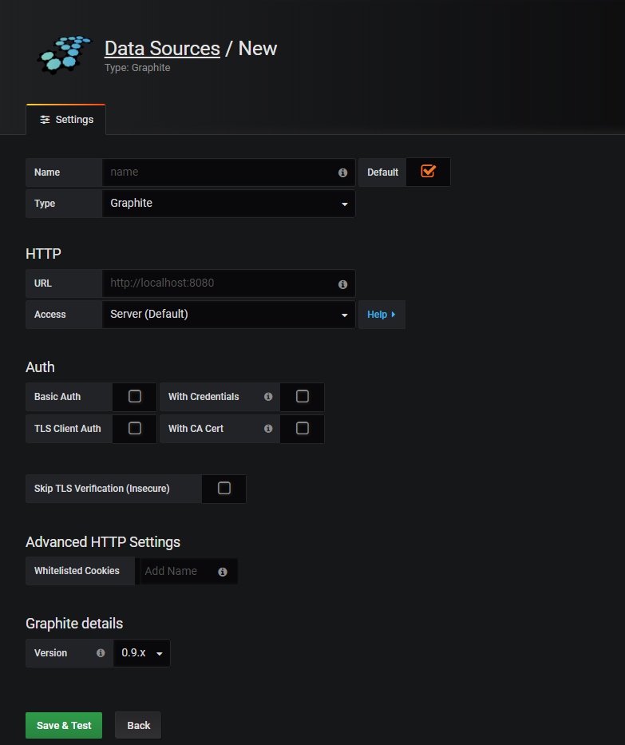
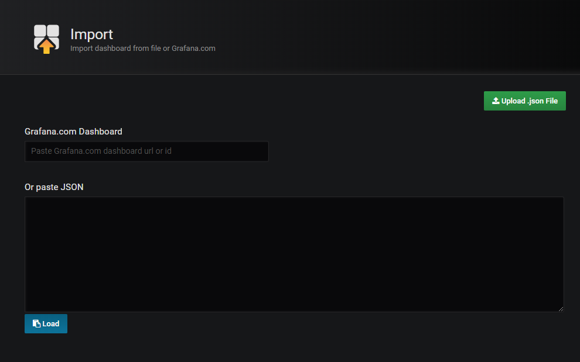
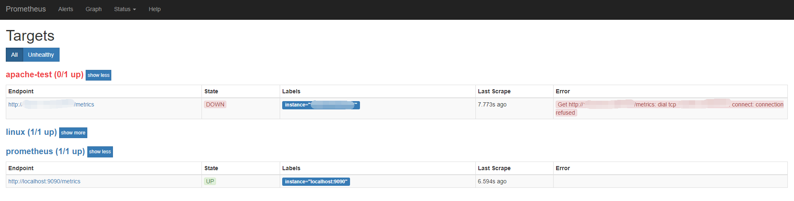
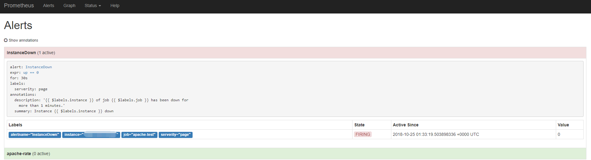

Prometheus介绍
Prometheus 是著名开源监控项目，其监控任务调度给具体的服务器，该服务器到目标上抓取监控数据，然后保存在本地的TSDB中。自定义强大的PromQL语言查询实时和历史时序数据，支持丰富的查询组合。
Prometheus 1.0版本的TSDB（V2存储引擎）基于LevelDB，并且使用了和Facebook Gorilla一样的压缩算法，能够将16个字节的数据点压缩到平均1.37个字节。
Prometheus 2.0版本引入了全新的V3存储引擎，提供了更高的写入和查询性能。本文主要分析该存储引擎设计思路。
组件
- Prometheus 主程序，主要是负责存储、抓取、聚合、查询方面。
- Alertmanager 程序，主要是负责实现报警功能。
- Pushgateway 程序，主要是实现接收由Client push过来的指标数据，在指定的时间间隔，由主程序来抓取。
- *_exporter 对 Prometheus 提供数据，由主程序自动拉取数据。
- Grafana 是一款可视化工具，大多使用在时序数据的监控方面，如同Kibana类似。Grafana的UI更加灵活，有丰富的插件，功能强大。
Docker监控部署
Dcoker安装使用这里直接跳过。因为使用容器部署我们直接使用本的配置文件挂载至容器中直接使用。
- Prometheus 部署
配置prometheus.yml
1
2
3
4
5
6
7
8
9
10
11
12
13
14
15
16
17
18
19
20
21# vim prometheus.yml
global:
scrape_interval: 15s #拉取数据间隔，默认为1分钟
evaluation_interval: 15s #计算rule的间隔，默认为1分钟
alerting:
alertmanagers:
- static_configs:
- targets:
- altermanager:9093 #设置altermanager邮件报警的地址
rule_files:
- "rules/*.yml" #设置rule的报警规则，不支持目录
scrape_configs:
- job_name: 'prometheus'
static_configs:
- targets: ['localhost:9090'] #默认监控prometheus所在机器的prometheus状态
- job_name: "apache-test" #这里我们设置一个apache监控节点
static_configs:
- targets: ['localhost:9091'] #apache服务监控的地址及端口
labels:
instance: apache #自定义标签
scrape_interval: 60s配置rule.yml
1
2
3
4
5
6
7
8
9
10
11
12# vim prometheus.yml
groups:
- name: test #报警规则的名字
rules:
- alert: InstanceDown #检测job的状态，持续1分钟metrics不能访问会发给altermanager进行报警
expr: up == 0 #匹配规则
for: 30s #持续时间
labels:
serverity: page
annotations:
summary: "Instance {{ $labels.instance }} down"
description: "{{ $labels.instance }} of job {{ $labels.job }} has been down for more than 1 minutes."启动Docker Prometheus服务
1
# docker run --name prometheus -d -p 9090:9090 -v ./prometheus.yml:/etc/prometheus/prometheus.yml -v ./rules/*.yml:/etc/prometheus/first_rule.yml prom/prometheus
- Alertmanager部署
配置alertmanager.yml
1
2
3
4
5
6
7
8
9
10
11
12
13
14
15
16
17# vim alertmanager.yml
global:
smtp_smarthost: 'smtp.163.com:25' #smtp的服务器地址
smtp_from: 'test@163.com' #邮箱from地址
smtp_auth_username: 'test@163.com' #邮箱用户名
smtp_auth_password: '******' #邮箱密码
smtp_require_tls: false # 这个配置了true导致没有报错，最后我设置成了false正常了
route:
group_by: ['host','id','type'] #配置报警分组
group_wait: 30s #分组等待时间
group_interval: 30s #分组的时间间隔
repeat_interval: 1h #重复报警的时间间隔
receiver: 'test-mails' #发给定义的name
receivers:
- name: 'test-mails'
email_configs:
- to: "×××@qq.com" #收件人地址，多个地址以','分隔启动Docker Alertmanager服务
1
# docker run --name alertmanager -d -p 9093:9093 -v ./config.yml:/etc/alertmanager/alertmanager.yml prom/alertmanager
- Grafana部署
启动Docker Alertmanager服务
1
# docker run -d --name=grafana -p 3000:3000 grafana/grafana
添加Data Source
添加Dashboard

测试邮件报警
首先停止Apache_exporter服务，主服务拉取数据失败
主服务匹配到报警规则
查看邮件